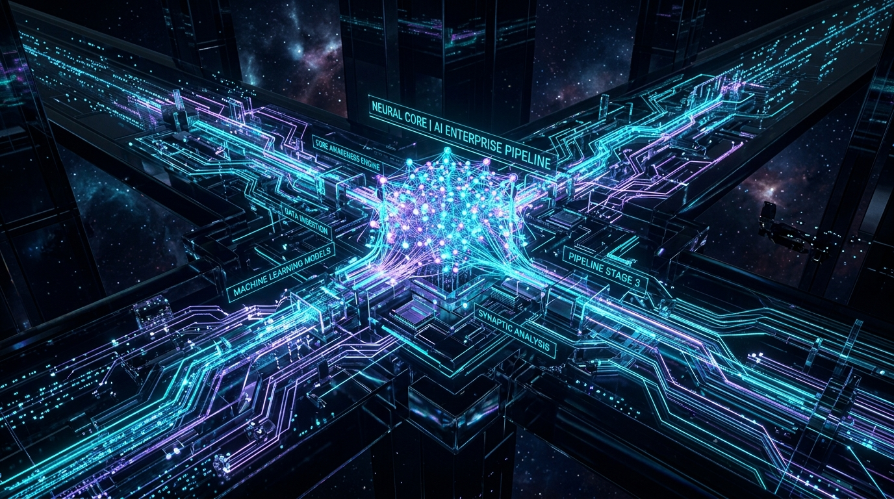

Tier-1 Investment BankP99: 680ms → 28ms | 120,000 TPS
Real-Time Algorithmic Fraud Detection Under Extreme Volume
A legacy Java fraud detection pipeline was dropping transactions during flash volatility. Our 3-person FDE pod embedded on-site, rewrote critical scoring paths into optimized Rust kernels, and deployed Apache Flink stream state to achieve sub-30ms scoring at 120k TPS.